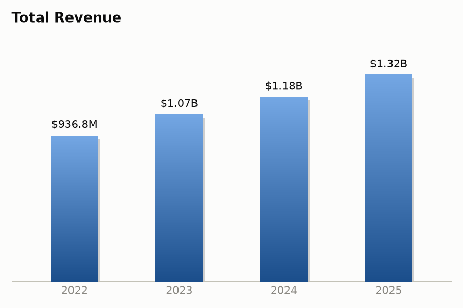
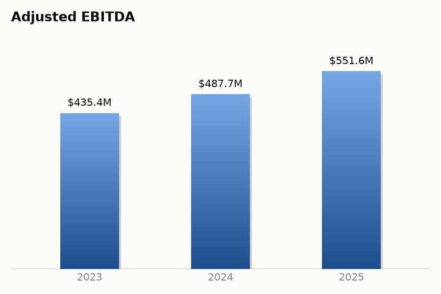
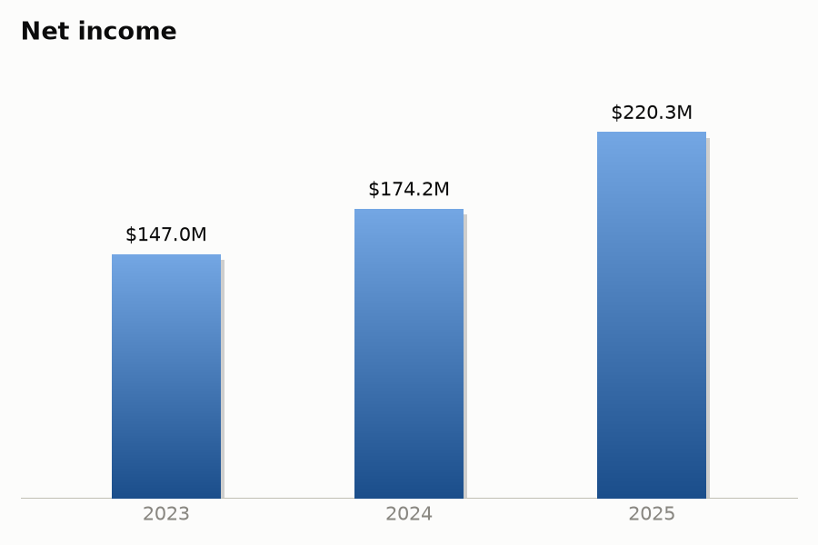
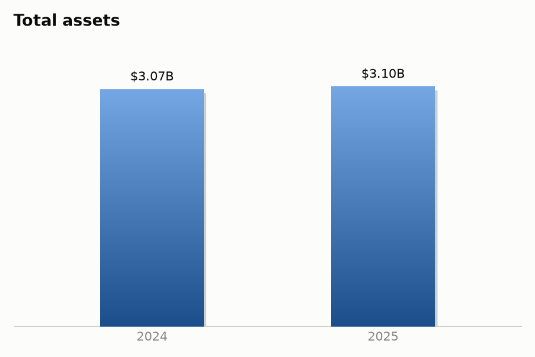

Financial Document Intelligence ingests a virtual data room (VDR) of financial and legal documents, then produces three things: a grounded Q&A chatbot, styled visual reports, and full investment-memo drafts — with every generated number and claim checked against its source before it's shown.
Semantic search across the full VDR, reranked for precision, answered with cited sources.
Financial metrics extracted from filings, rendered as styled trend charts.
A full CIM-style investment memo, drafted section by section and fact-checked against source text.
This is the live system below, not a mockup — type a real question. Retrieval runs in two stages (a wide embedding search, then a reranking pass) so the answer comes from the passage that actually contains it, then every claim is checked against the source before it's shown. Answers can take 10–20 seconds, and the demo is capped per visitor to keep it free to run.
Pulled from filings via map-reduce extraction (chunking long documents avoids the "lost in the middle" effect that causes single-pass extraction to miss facts), then rendered as trend charts — no manual data entry.




Each section is written in a persuasive, sell-side CIM tone, then independently fact-checked — a semantic check for unsupported claims, plus a strict numeric check that flags any figure without a match in the source filings. This is an excerpt of the Executive Summary from the full generated memo.
Planet Fitness, Inc. ("Planet Fitness," "PLNT," or the "Company") represents a rare combination of scale, brand leadership, and financial resilience in the U.S. and international fitness industry. As one of the largest franchisors and operators of fitness clubs in the world by both membership and unit count, Planet Fitness has built a highly recurring, asset-light revenue model that converts membership growth into industry-leading profitability with remarkable consistency.